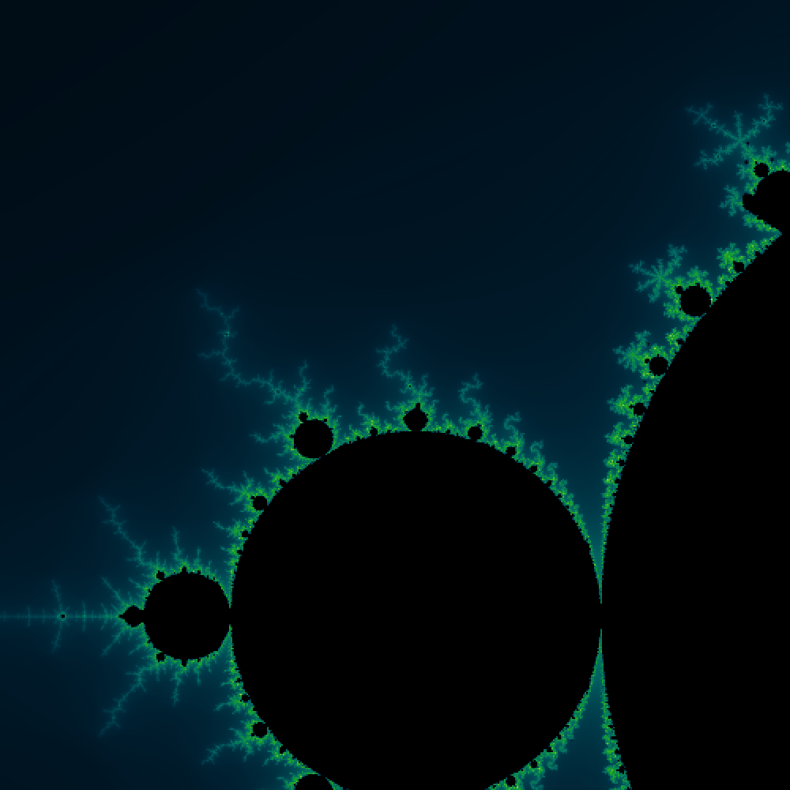
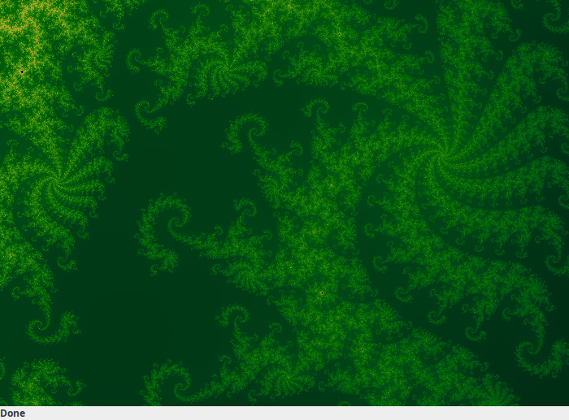
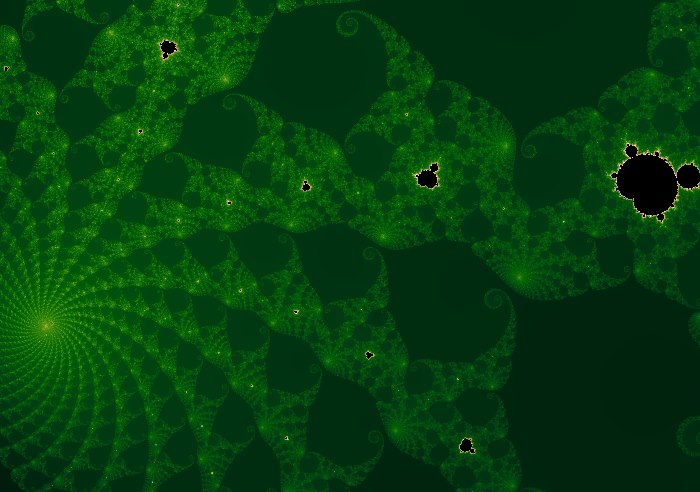

Mandelbrot fractal viewer

Just a simple Mandelbrot set renderer written in Java. I made this a long time ago during my university days.
Mandelbrot.jar
As you may know, computing the Mandelbrot set is embarrassingly parallel. I took advantage of this and used multiple CPU threads to divide the image and render it in parallel. The GPU is better suited to this but that was beyond my abilities at that time.

Don’t know if I still have the source code though.
Here it is in action (forgive the bad video compression):
Mandelbrot.jar